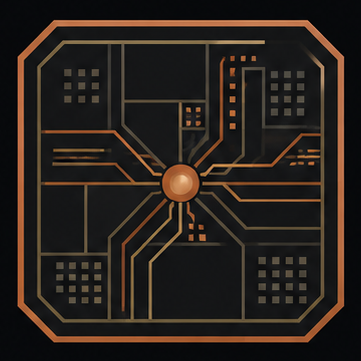

HelionThis is the user guide: open a design, run the CAD, read timing, simulate. Build steps live on Start.
Helion.app → Contents/MacOS/Helion (same as helion-ide)helion (doctor, run, report_timing, project)HL10T-C32-1 from HAD, not a vendor dieopen dist/Helion.app (or cargo run -p helion-gui --bin helion-ide).counter.sv, blinky.sv, hier.sv, complex.sv, or ysyx_ibex.sv.HL10T-C32-1 (IO ring, clock spine, CLB array). Timing canvas is STA.Headless (no window) — this is the gold gate:
cargo run -p helion-gui --bin helion-ide -- --headless examples/counter.sv
# expect: WNS_PS=9640cargo run -p helion-cli -- doctor
cargo run -p helion-cli -- run examples/counter.sv --cycles 16
cargo run -p helion-cli -- report_timing examples/blinky.svEmpty-XDC counter gold: WNS_PS=9640. Fabric LED over 16 cycles: LED[16]=0000000111111110 (LED = cnt[3]).
HAD grid for HL10T-C32-1:
devices/helion/parts/HL10T-C32-1.tomlIn the app, Device is a canvas that fits the remaining pane (not a tiny bottom scroller). Package and Bitstream sit with it.
If you change CAD or GUI, helion-ide --headless examples/counter.sv must still print WNS_PS=9640 unless the same commit updates the QoR table in the README with a reason.
examples/ysyx_ibex.sv is on the Open rail. Ingest is helion-sv. Fitting a full SoC on this part is not the synth bar. Leftover Helion-legal constructs should still map; do not abort the run because sv-parser is unhappy.